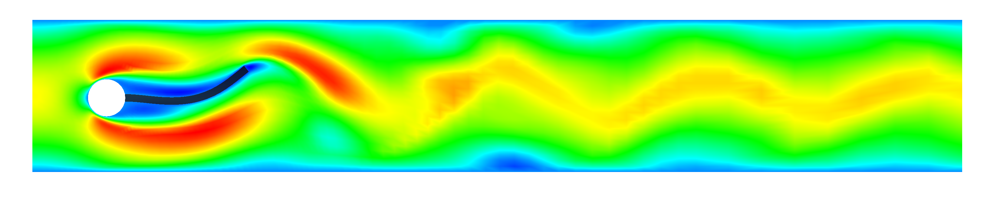
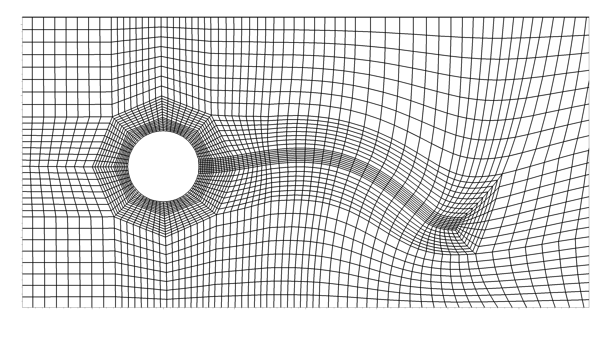
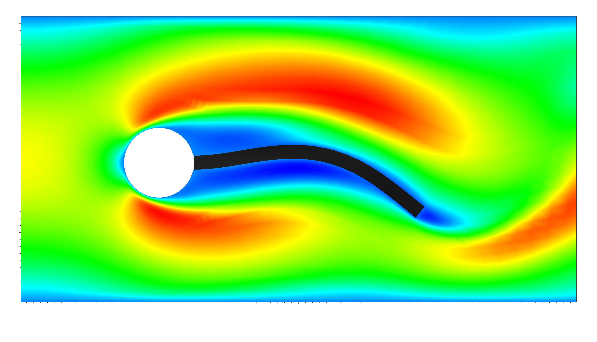

ANS 1(1) Thomas Wick: Solving Monolithic Fluid-Structure Interaction Problems in Arbitrary Lagrangian Eulerian Coordinates with the deal.II Library
Archive of Numerical Software 1(1), 1-19, 2013
Solving Monolithic Fluid-Structure Interaction Problems in Arbitrary Lagrangian Eulerian Coordinates with the deal.II Library
Thomas Wick
We describe a setting of a nonlinear fluid-structure interaction
problem and the corresponding solution process in the finite element
software package deal.II. The fluid equations are transformed via the
ALE mapping (Arbitrary Lagrangian Eulerian framework) to a reference
configuration and these are coupled with the structure equations by a
monolithic solution algorithm. To construct the ALE mapping, we use a
biharmonic equation. Finite differences are used for temporal
discretization. The derivation is realized in a general manner that
serves for different time stepping schemes. Spatial discretization is
based on a Galerkin finite element scheme. The nonlinear system is
solved by a Newton method. Using this approach, the Jacobian matrix
is constructed by exact computation of the directional derivatives.
The implementation using the software library package deal.II serves
for the computation of different fluid-structure
configurations. Specifically, our geometry data are taken from the
fluid-structure benchmark configuration that was proposed in 2006 in
the DFG project Fluid-Structure Interaction I: Modelling, Simulation,
Optimisation. Our results show that this implementation using deal.II
is able to produce comparable findings.

